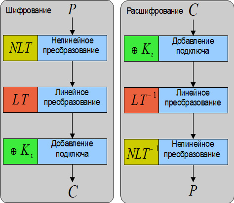

Второй распространенной схемой построения БШ является подстановочно-перестановочная сеть (SPN – substitution permutation network), еще называемая структурой «квадрат». Раундовая функция шифров структуры квадрат различна для операций шифрования и расшифрования, и представлена на рис. 3.5.

Рис. 3.5. Схема одного раунда (архитектура Square)
Преимуществом данной схемы является то, что на каждом шаге изменяется весь блок данных, т. е. для такой схемы требуется вдвое меньше раундов, чем для аналогичной сети Фейстеля, и такие алгоритмы имеют большее быстродействие. К шифрам этой группы принадлежат CRYPTON, Rijndael, SAFER+, SAFER++, SERPENT.
К недостаткам данной схемы относится необходимость использования в ней только биективных операций, т. е. имеющих обратную операцию. Также недостатком является различие операций шифрования/расшифрования, что усложняет программную и аппаратную реализацию.